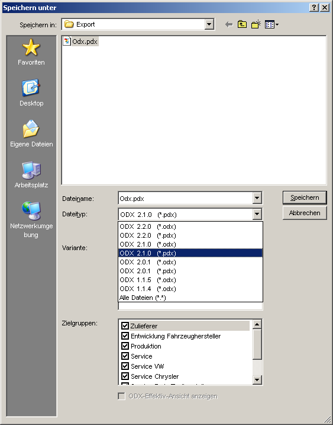

The PDX-Format allows compressing multiple Odx-Files into one archive (e.g. ZIP-File). The PDX-File contains in addition a so called Catalog-File. This Catalog is basically a list of the Files contained within the archive. It is used within the data-exchange process to determine whether a file was modified/added or deleted.
The PDX Export integrates all files (odx, java, etc.) into a PDX container. The exported Odx-files are not deleted.
With CANdelaStudio 6.0 SP1 PDX can be selected directly as FileType in the Export-Dialog. Then just the PDX and no additional files are created.

Save as-dialog